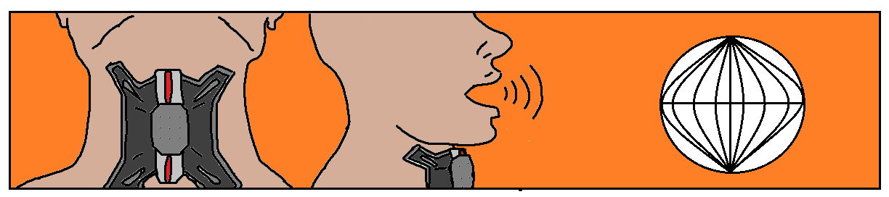
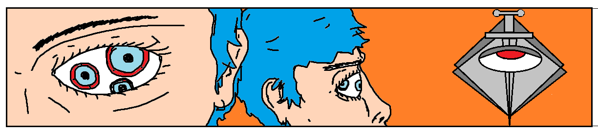
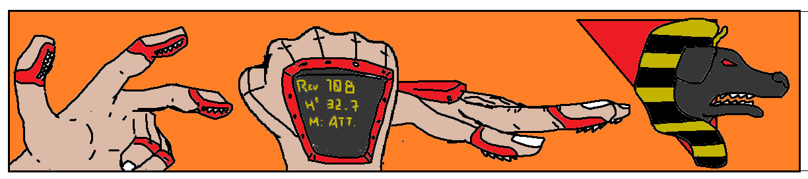

SERVICIOS
PUERTO INTRACRANEAL v1.32 by ASTHMA
Los dias de sentarse frente a una pantalla para conectarse con el mundo se han terminado.
Con la instalacion del Puerto Intracraneal v1.32 de empresas ASTHMA vas a poder navegar la web en cualquier momento y lugar.

ATENCION: Servicio de internet no incluido. Recomendamos no descargar ningun archivo desde la web, riesgo de daño cerebral grave.
TRAQUEA GRANDEON v3 by ASTHMA
Los riesgos del cancer de traquea se han convertido en uno de los problemas mas actuales en neustra sociedad tras la 4ta guerra corporacional.
Gracias a la nueva Traquea Grandeon v3 de empresas ASTHMA vas a poder fumar por el resto de tus dias sin tener que volver a preocuparte por nada.
Incluye tambien un cambiador de frecuencia con el cual vas a poder hacer que tu voz suene como siempre soñaste.
ATENCION: No reduce el riesgo de otras enfermedades causadas por la ingesta de cigarrillos. Chrysocyon Dinamics no avala este tipo de conductas.
TriOptics by DAGGERCORP
Alguna vez te sentiste inseguro y deseando poder ver hasta por tu espalda?
Te presentamos los nuevos implantes multifocales TriOptics by DAGGERCORP.
Con este implante de ojos vas a poder ver en 3 direcciones al mismo tiempo y vas a poder olvidarte para siempre de ser la victima sorpresa de cualquier tipo de malhechores
ATENCION: Recomendamos este implante junto con nuestro producto PUERTO INTRACRANEAL ASTHMA v1.32 para evitar paralisis cerebral debido al alto proceso de imagenes simultaneas generada por este producto. La venta de este producto solo incluye 1 globo ocular, consultar descuentos por el par.
Saw Fingers by DOGOD
Pensados para la gente dedicada al trabajo manual, los nuevos Saw Fingers de DOGOD estan diseñados para cortar desde madera hasta acero o pavimento.
Su diseño esta pensado para facilitar hasta los cortes mas precisos, asi seas leñador o cirujano neuronal.
Su variador de frecuencias, control de velocidad, cuchilla vibrasonica y silencioso diseño lo convierten en una de las herramientas mas utiles en la actualidad para todo tipo de trabajos.
ATENCION: Recomendamos prestar atencion al momento de su uso. Chrysocyon Dinamics no se hace responsable de cualquier fatalidad, intencional o no, que este dispositivo pueda causar.